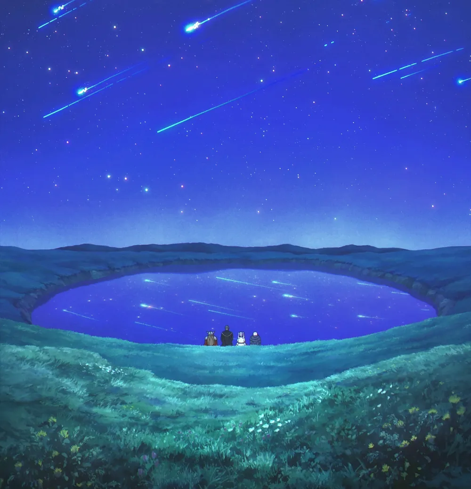
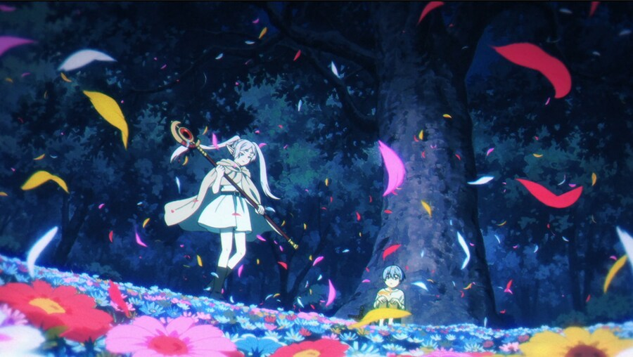
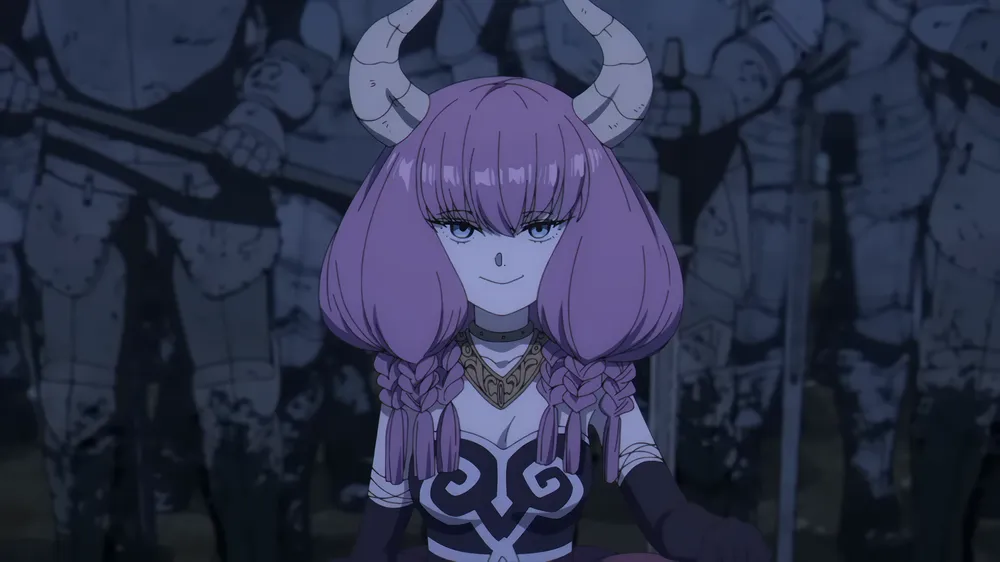
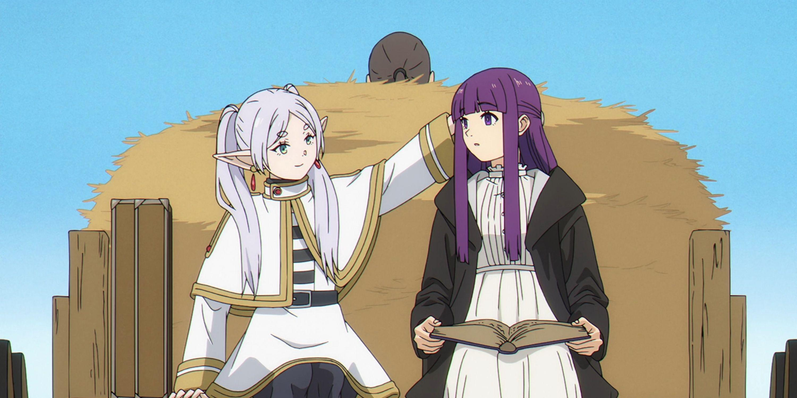
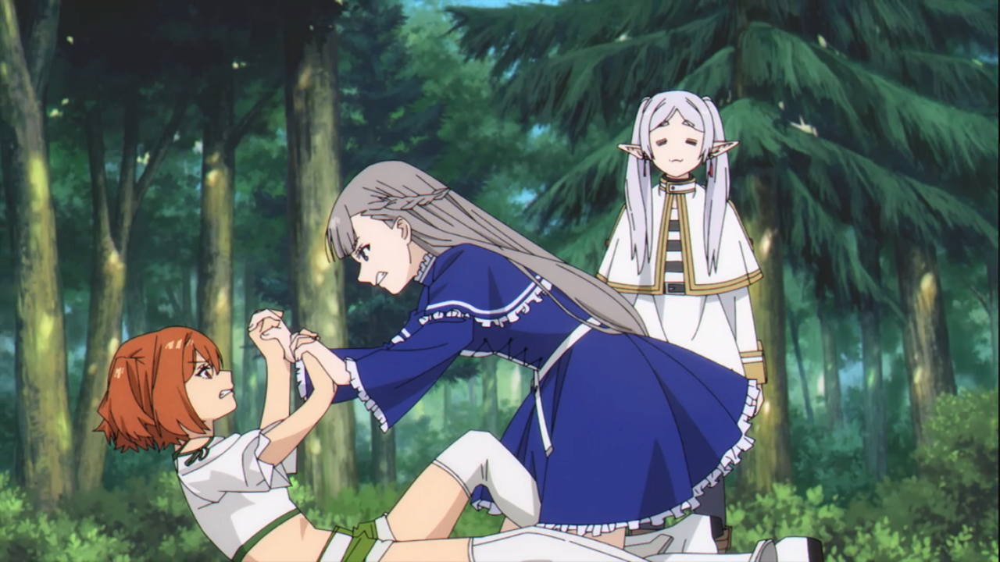

✦
쓸모없는 마법 수집
세상에 존재하는 별 쓸모없어 보이는 마법들을 수집하는 특이한 취미. 나무의 성장에서 전기를 발생시키기도 한다.
葬送のフリーレン
장송의 프리렌 - 1000년을 넘어 이어지는 여정
CHARACTER PROFILE
프리렌은 인간 기준으로는 거의 불로불사에 가까운 엘프 마법사다. 용사 힘멜과 함께 마왕을 무찌른 전설적인 파티의 일원으로, 마왕 토벌 후 다시 홀로 여정을 떠난다.
수천 년의 세월을 살아온 그녀에게 인간의 10년은 찰나에 불과하다. 힘멜의 죽음을 계기로 비로소 "인간을 이해하고 싶다"는 소망을 갖게 되고, 제자 페른, 전사 슈타르크와 함께 새로운 모험을 시작한다.
무감동해 보이는 표정 뒤에 조용히 쌓아온 기억과 감정이 있으며, 마법에 대한 순수한 열정과 특유의 무뚝뚝함이 매력 포인트다.
ABILITIES
✦
세상에 존재하는 별 쓸모없어 보이는 마법들을 수집하는 특이한 취미. 나무의 성장에서 전기를 발생시키기도 한다.
◈
과거의 공격 마법을 인간이 범용 마법으로 개량한 형태. 프리렌은 이를 오랜 경험과 기교로 수준 높게 구사한다.
◆
자신의 마력을 완전히 숨기는 고도의 기술. 수위가 큰 마물도 눈치채기 어려워 전술적 우위를 점한다.
★
1000년 넘게 연마한 수준의 고위 마법 다수 보유. 전장의 마력 구조를 파악해 효율적으로 운용한다.
❄
광대한 범위에 마력의 비를 쏟아붓는 광역 섬멸 마법. 단 한 번의 시전으로 수많은 적을 무력화할 수 있다.
◎
공간을 마력으로 분리하는 방어/구속 계열 마법. 강력한 마나의 압박조차 견디는 높은 수준의 구현력을 보인다.
⟡
타인의 마력 성질과 구조를 순식간에 파악하는 능력. 적의 마법 패턴을 읽고 최적의 대응책을 즉시 도출한다.
✧
험한 위협 앞에서도 냉정하게 판단하고, 단순한 마법이라도 정밀하게 운용하는 집중력이 돋보인다.
STORY SCENES

50년 만에 재회한 힘멜 일행과 함께 본 별똥별 비. 힘멜의 임종 후 처음으로 울었던 프리렌의 여정이 시작되는 순간.

힘멜이 살아생전 좋아했던 꽃을 찾아 수십 년을 헤매는 프리렌. 그때서야 누군가를 알고 싶었다는 것을 깨닫는다.

마왕의 잔당 '단두대의 아우라'와의 대결. 마력을 완전히 숨긴 채 역공을 펼치는 압도적인 장면.

고아인 페른을 거두어 마법사로 키우는 프리렌. 무뚝뚝하지만 그 방식으로 애정을 표현하는 일상의 순간들.

페른과 함께 1급 마법사 시험에 도전. 각지에서 모인 강력한 마법사들과 펼치는 치열한 대결.
프리렌의 마법 스승이자 인류에게 마법을 널리 전파한 전설적 마법사 플람메와의 회상. 프리렌의 근원을 보여주는 장면.
"나는 그를 더 잘 알고 싶었던 것 같아.
죽고 나서야 그걸 알았어."